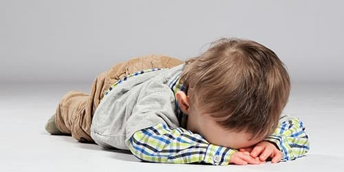
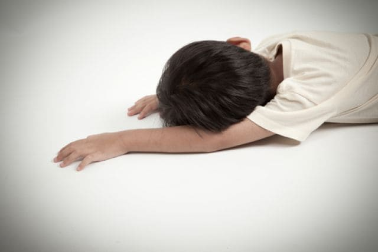
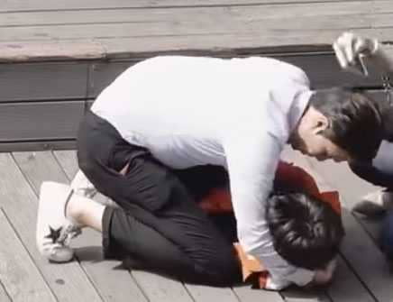
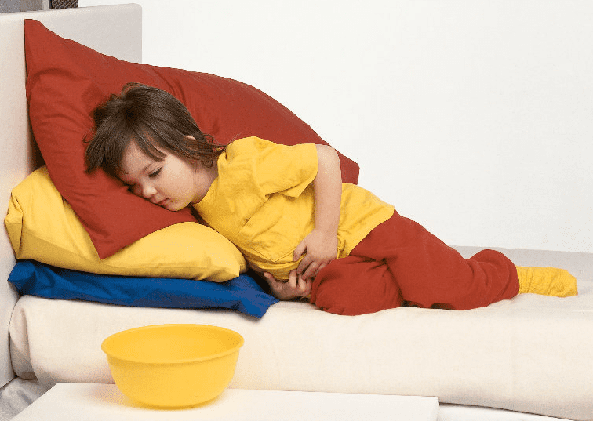
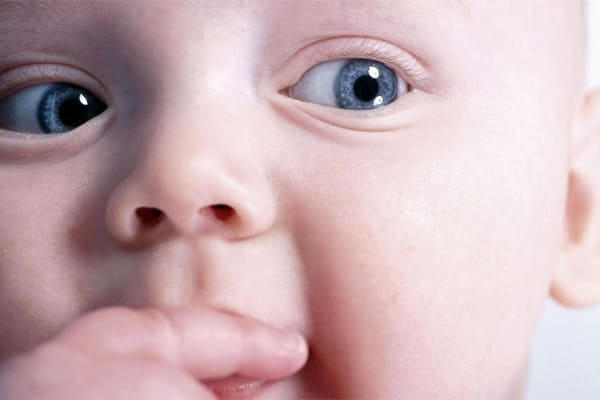
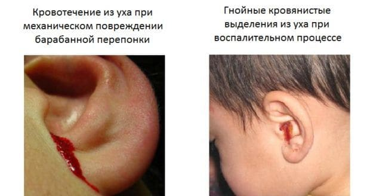
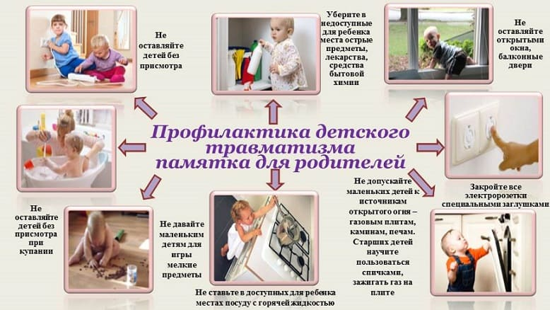

ТРАВМА ГОЛОВЫ – КАК ПОНЯТЬ, ЧТО ВСЕ В ПОРЯДКЕ
Трудно найти ребенка, который бы никогда не ударялся головой. Особенно часто незначительные травмы головы получают дети, которые учатся ползать, ходить или кататься на велосипеде. Эти несчастные случаи очень пугают и огорчают родителей, но большинство травм головы у детей не являются опасными и не имеют никаких последствий.

Синяки, раны и ссадины на голове и лице обычно хорошо заживают и требуют такого же лечения, как на любой другой части тела. Раны кожи головы склонны к сильной кровоточивости, поскольку лицо и кожа головы имеют много кровеносных сосудов вблизи поверхности кожи. Это кровотечение может выглядеть ужасающе, но обычно травма не является серьезной, и вы можете остановить кровотечение, просто надавив на рану чистой салфеткой и успокоив ребенка. Если кровотечение не останавливается в первые минуты, это может указывать на глубокую рану; в таком случае вам следует срочно обратиться за медицинской помощью, чтобы ребенок не потерял слишком много крови.
Причин, по которым маленькие дети гораздо чаще взрослых получают травмы головы, несколько:
• у малышей хуже координация движений;
• размеры головы ребенка гораздо больше по отношению к телу, чем у взрослого;
• мышцы шеи у ребенка не так хорошо развиты;
• ноги у маленьких детей короче относительно остальных частей тела. Это смещает центр тяжести тела ребенка гораздо ближе к голове по сравнению со взрослыми;
• у маленьких детей меньше опыта и навыков движений (ходьбы, прыжков, бега), и в процессе приобретения этих навыков травмы случаются чаще всего.
В первые минуты после травмы головы вам придется принять решение о вызове скорой помощи.
Обязательно сделайте это, если:
• ребенок потерял сознание;

• ребенок не дышит или дышит «странно», шумно или прерывисто;

• у ребенка начались судороги;

• у ребенка рвота, особенно многократная;

•у ребенка разный диаметр зрачков;

• у ребенка течет кровь или жидкость из уха;

• сознание ребенка резко спутанно, заторможено.
Наиболее тяжелые травмы головы у маленьких детей вызваны падениями с высоты больше их роста и жестоким обращением с ребенком (синдром встряхнутого ребенка). Серьезные травмы головы могут привести к стойкому повреждению головного мозга. Чем выше сила удара по голове, тем выше риск тяжелых и опасных повреждений мозга.
Серьезные травмы головы обязательно должны быть осмотрены врачом, поскольку иногда требуют срочного обследования и лечения.
Но даже врачу бывает трудно провести грань между легкой (сотрясение мозга) и тяжелой травмой головного мозга (ушиб мозга, кровотечение в мозг и др.). Поэтому даже если врач при осмотре исключил все опасное и отпустил ребенка домой, внимательно следите за ребенком в течение 24 часов после травмы головы, чтобы вовремя заметить начинающееся ухудшение состояния и опасные симптомы.

Многие травмы головы можно предотвратить. Используйте автомобильные сиденья, ремни безопасности, велошлемы и другие защитные устройства, сделайте свой дом максимально безопасным . Обучайте ребенка безопасному поведению, чтобы оно закреплялось привычкой и сохранялось даже когда его никто не контролирует.
(Сергей Бутрий "Здоровье ребенка: современный подход")